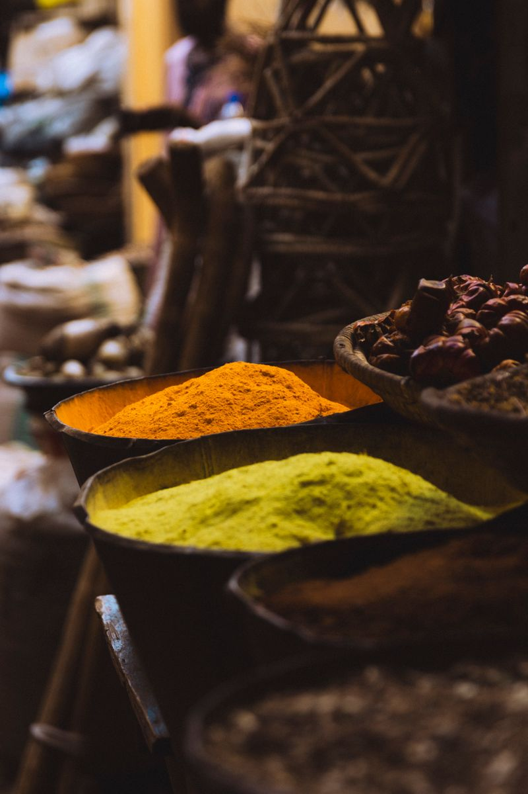
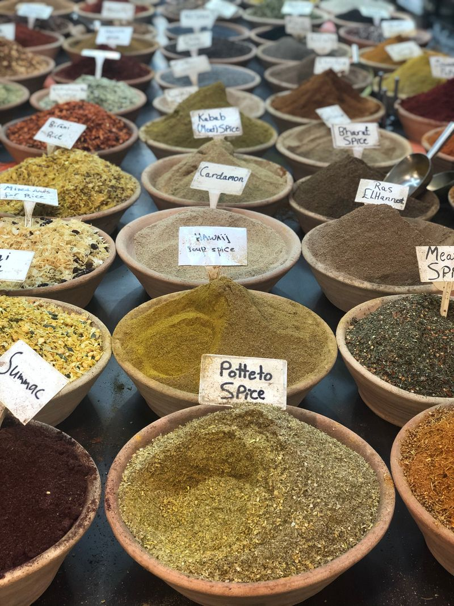

Moringa Powder



Our Moringa Powder is made from shade-dried moringa leaves (Moringa oleifera) ground to a fine, vibrant green powder that captures all the nutritional wealth of this remarkable plant. It is sourced from smallholder farms committed to sustainable practices and processed with minimal handling to retain the maximum concentration of vitamins, minerals, and phytonutrients. Moringa has been called the “Miracle Tree” by nutritionists worldwide due to its exceptional nutrient density. Stir it into smoothies, soups, teas, oatmeal, or any favorite dish for an easy, delicious nutrient boost that enhances both flavor and health benefits.
Nutritional Powerhouse & Body Support
Moringa is one of the most nutrient-dense foods on the planet, containing over 90 nutrients per leaf. It provides vitamin A, C, and E, plus iron, calcium, magnesium, and potassium. It contains all nine essential amino acids, powerful antioxidants like quercetin, and supports sustained energy, digestion, immune function, joint health, and healthy skin.
How to Use
Stir one teaspoon (5g) of moringa powder into smoothies, juices, soups, teas, oatmeal, or yogurt. For best absorption of fat-soluble vitamins, consume with healthy fats like coconut oil or avocado. Use once to twice daily.
Ingredients
100% pure moringa leaf powder (Moringa oleifera) — No additives, no preservatives, no artificial flavors, no fillers.